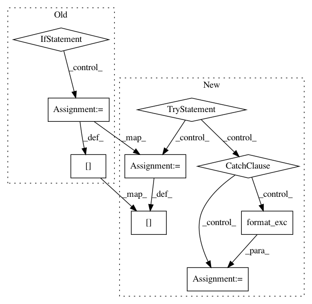

542967273fc7660d61726d07a1db756bdb890f43,train.py,,train,#Any#,34
Before Change
best_flag = False
if True: // if true
if best_val_score is None or current_score > best_val_score:
best_val_score = current_score
best_flag = True
// Dump miscalleous informations
infos["best_val_score"] = best_val_score
histories["val_result_history"] = val_result_history
histories["loss_history"] = loss_history
histories["lr_history"] = lr_history
histories["ss_prob_history"] = ss_prob_history
save_checkpoint(model, infos, optimizer, histories)
if opt.save_history_ckpt:
save_checkpoint(model, infos, optimizer, append=str(iteration))
if best_flag:
save_checkpoint(model, infos, optimizer, append="best")
// Stop if reaching max epochs
if epoch >= opt.max_epochs and opt.max_epochs != -1:
break
opt = opts.parse_opt()
After Change
with open(os.path.join(opt.checkpoint_path, "histories_"+opt.id+"%s.pkl" %(append)), "wb") as f:
utils.pickle_dump(histories, f)
try:
while True:
if epoch_done:
if not opt.noamopt and not opt.reduce_on_plateau:
// Assign the learning rate
if epoch > opt.learning_rate_decay_start and opt.learning_rate_decay_start >= 0:
frac = (epoch - opt.learning_rate_decay_start) // opt.learning_rate_decay_every
decay_factor = opt.learning_rate_decay_rate ** frac
opt.current_lr = opt.learning_rate * decay_factor
else:
opt.current_lr = opt.learning_rate
utils.set_lr(optimizer, opt.current_lr) // set the decayed rate
// Assign the scheduled sampling prob
if epoch > opt.scheduled_sampling_start and opt.scheduled_sampling_start >= 0:
frac = (epoch - opt.scheduled_sampling_start) // opt.scheduled_sampling_increase_every
opt.ss_prob = min(opt.scheduled_sampling_increase_prob * frac, opt.scheduled_sampling_max_prob)
model.ss_prob = opt.ss_prob
// If start self critical training
if opt.self_critical_after != -1 and epoch >= opt.self_critical_after:
sc_flag = True
init_scorer(opt.cached_tokens)
else:
sc_flag = False
epoch_done = False
start = time.time()
// Load data from train split (0)
data = loader.get_batch("train")
print("Read data:", time.time() - start)
torch.cuda.synchronize()
start = time.time()
tmp = [data["fc_feats"], data["att_feats"], data["labels"], data["masks"], data["att_masks"]]
tmp = [_ if _ is None else _.cuda() for _ in tmp]
fc_feats, att_feats, labels, masks, att_masks = tmp
optimizer.zero_grad()
model_out = dp_lw_model(fc_feats, att_feats, labels, masks, att_masks, data["gts"], torch.arange(0, len(data["gts"])), sc_flag)
loss = model_out["loss"].mean()
loss.backward()
utils.clip_gradient(optimizer, opt.grad_clip)
optimizer.step()
train_loss = loss.item()
torch.cuda.synchronize()
end = time.time()
if not sc_flag:
print("iter {} (epoch {}), train_loss = {:.3f}, time/batch = {:.3f}" \
.format(iteration, epoch, train_loss, end - start))
else:
print("iter {} (epoch {}), avg_reward = {:.3f}, time/batch = {:.3f}" \
.format(iteration, epoch, model_out["reward"].mean(), end - start))
// Update the iteration and epoch
iteration += 1
if data["bounds"]["wrapped"]:
epoch += 1
epoch_done = True
// Write the training loss summary
if (iteration % opt.losses_log_every == 0):
add_summary_value(tb_summary_writer, "train_loss", train_loss, iteration)
if opt.noamopt:
opt.current_lr = optimizer.rate()
elif opt.reduce_on_plateau:
opt.current_lr = optimizer.current_lr
add_summary_value(tb_summary_writer, "learning_rate", opt.current_lr, iteration)
add_summary_value(tb_summary_writer, "scheduled_sampling_prob", model.ss_prob, iteration)
if sc_flag:
add_summary_value(tb_summary_writer, "avg_reward", model_out["reward"].mean(), iteration)
loss_history[iteration] = train_loss if not sc_flag else model_out["reward"].mean()
lr_history[iteration] = opt.current_lr
ss_prob_history[iteration] = model.ss_prob
// update infos
infos["iter"] = iteration
infos["epoch"] = epoch
infos["iterators"] = loader.iterators
infos["split_ix"] = loader.split_ix
// make evaluation on validation set, and save model
if (iteration % opt.save_checkpoint_every == 0):
// eval model
eval_kwargs = {"split": "val",
"dataset": opt.input_json}
eval_kwargs.update(vars(opt))
val_loss, predictions, lang_stats = eval_utils.eval_split(
dp_model, lw_model.crit, loader, eval_kwargs)
if opt.reduce_on_plateau:
if "CIDEr" in lang_stats:
optimizer.scheduler_step(-lang_stats["CIDEr"])
else:
optimizer.scheduler_step(val_loss)
// Write validation result into summary
add_summary_value(tb_summary_writer, "validation loss", val_loss, iteration)
if lang_stats is not None:
for k,v in lang_stats.items():
add_summary_value(tb_summary_writer, k, v, iteration)
val_result_history[iteration] = {"loss": val_loss, "lang_stats": lang_stats, "predictions": predictions}
// Save model if is improving on validation result
if opt.language_eval == 1:
current_score = lang_stats["CIDEr"]
else:
current_score = - val_loss
best_flag = False
if best_val_score is None or current_score > best_val_score:
best_val_score = current_score
best_flag = True
// Dump miscalleous informations
infos["best_val_score"] = best_val_score
histories["val_result_history"] = val_result_history
histories["loss_history"] = loss_history
histories["lr_history"] = lr_history
histories["ss_prob_history"] = ss_prob_history
save_checkpoint(model, infos, optimizer, histories)
if opt.save_history_ckpt:
save_checkpoint(model, infos, optimizer, append=str(iteration))
if best_flag:
save_checkpoint(model, infos, optimizer, append="best")
// Stop if reaching max epochs
if epoch >= opt.max_epochs and opt.max_epochs != -1:
break
except (RuntimeError, KeyboardInterrupt):
print("Save ckpt on exception ...")
save_checkpoint(model, infos, optimizer)
print("Save ckpt done.")
stack_trace = traceback.format_exc()
print(stack_trace)
opt = opts.parse_opt()
train(opt)
In pattern: SUPERPATTERN
Frequency: 4
Non-data size: 9
Instances
Project Name: ruotianluo/self-critical.pytorch
Commit Name: 542967273fc7660d61726d07a1db756bdb890f43
Time: 2019-04-12
Author: rluo@ttic.edu
File Name: train.py
Class Name:
Method Name: train
Project Name: sentinel-hub/eo-learn
Commit Name: 9056208ea104828630f15b4e9e49da8e02755f75
Time: 2018-08-02
Author: tomi.slijepcevic@gmail.com
File Name: core/eolearn/core/eoexecution.py
Class Name: EOExecutor
Method Name: _render_tasks_source
Project Name: sentinel-hub/eo-learn
Commit Name: 798defcbca0cb6a0ecf5f3b371b9d1520bf4dd07
Time: 2018-07-26
Author: tomi.slijepcevic@gmail.com
File Name: core/eolearn/core/eoexecution.py
Class Name: EOExecutor
Method Name: _render_tasks_source